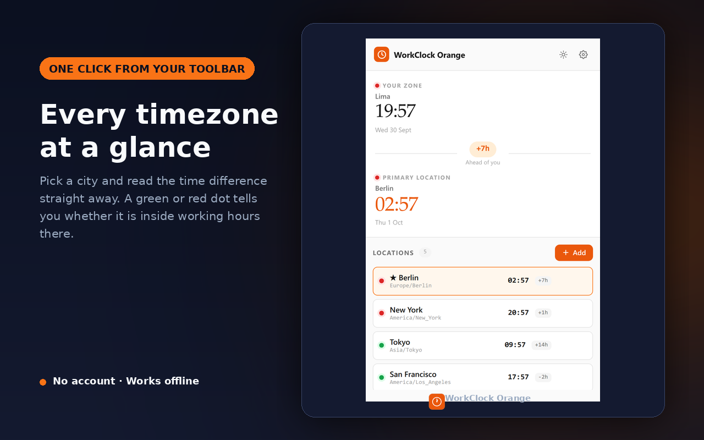
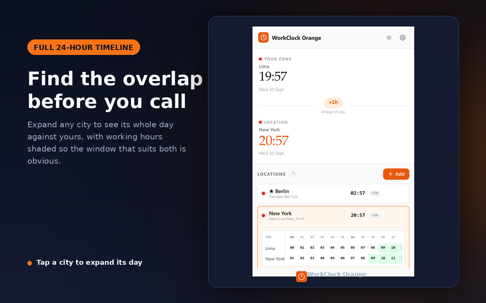
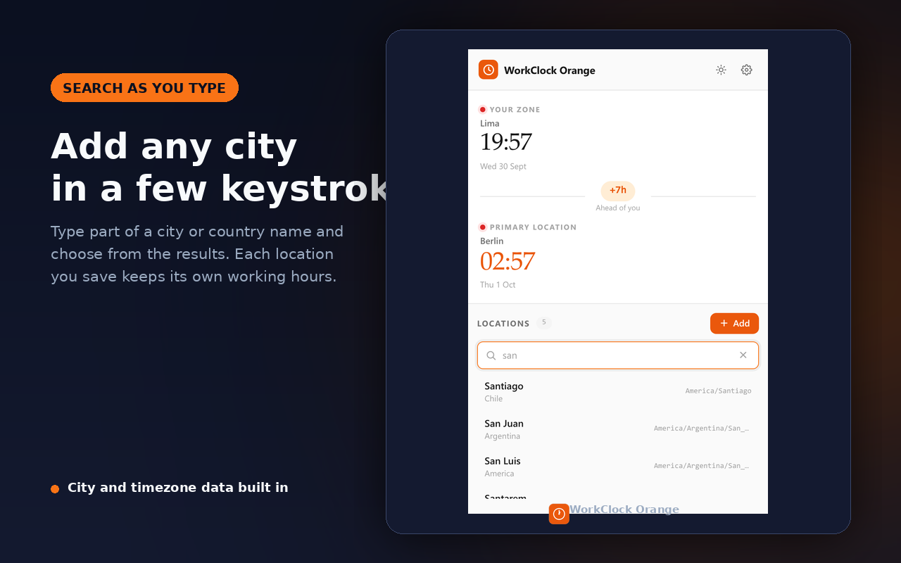
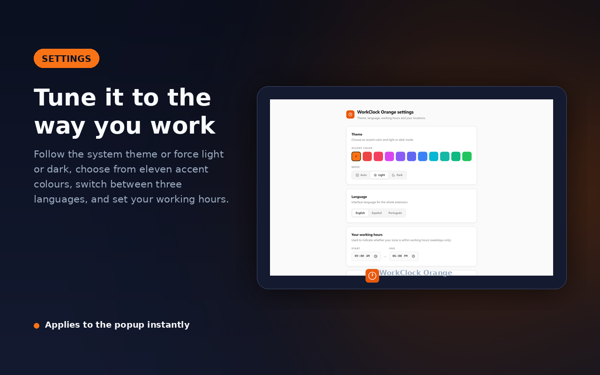
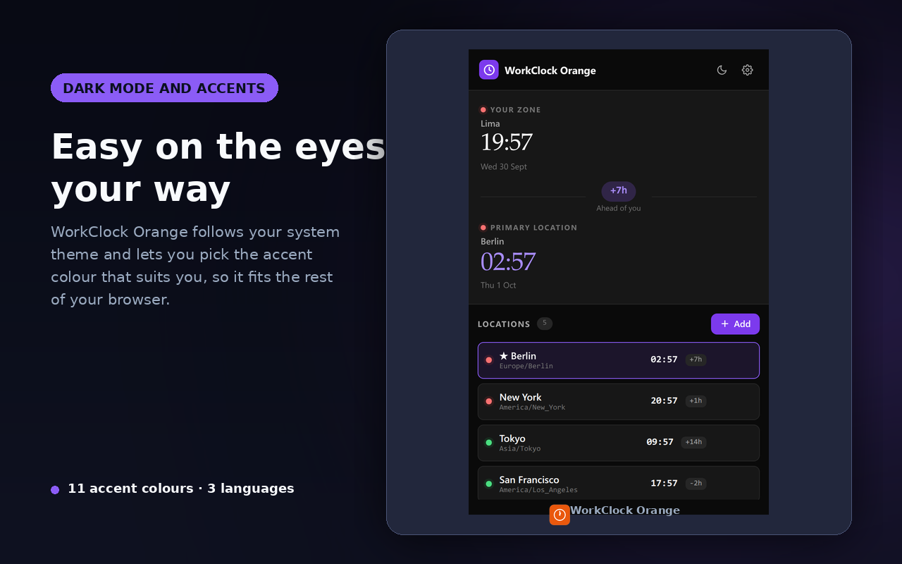

Every timezone, one click from your toolbar.
Save the cities you work with, see the time difference at a glance, and know who is inside working hours before you schedule the call.
Version 1.0.0 · Free · No account required. The store link goes live when the extension is published.

What it does
Everything happens inside your browser. There is no account, no server, and nothing leaves your machine.
Time difference at a glance
Each saved city shows its current time and the offset from your own zone, so you never have to do the arithmetic.
Full 24-hour overlap
Expand a city to see its whole day laid against yours, with working hours shaded and the workable window picked out.
Search any city
Type part of a city or country name and add it in a few keystrokes. City and timezone data ships with the extension.
Working hours per city
A green or red dot shows whether a colleague is inside working hours right now, and you set each city's own schedule.
Theme and accent
Follow the system theme or force light or dark, and choose from eleven accent colours to match the rest of your browser.
Three languages
The interface ships in English, Spanish and Portuguese, switchable from the options page.
Screenshots
The real extension UI, captured from the shipping build.




Privacy
WorkClock Orange collects nothing, because there is nowhere for it to send anything.
Your saved cities and preferences are kept in your browser's local storage. They never leave your machine. The extension makes no network requests, sets no cookies, contains no analytics or tracking, and has no permission to read the pages you visit.